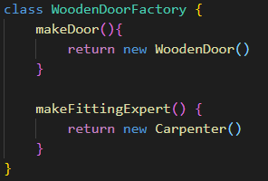
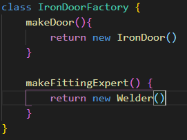
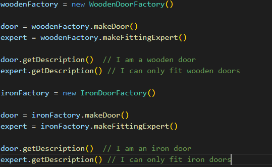

Wood factory returns carpenter and wood door:
The iron factory returns the welder and the iron door:
And now you can do the doors too:
Now the required master is included with each door. The pattern is useful when there are several classes that depend on each other.